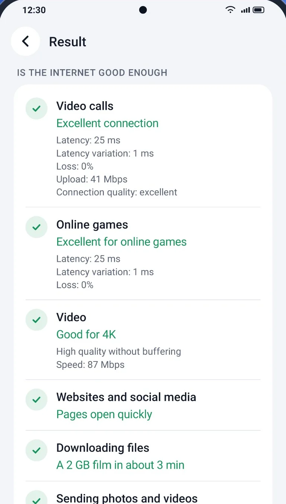
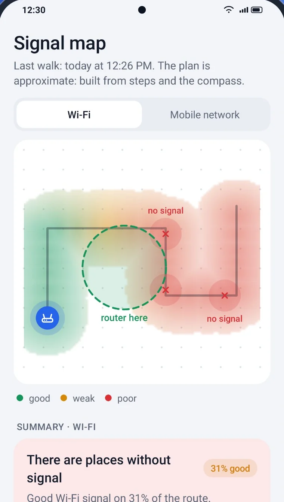
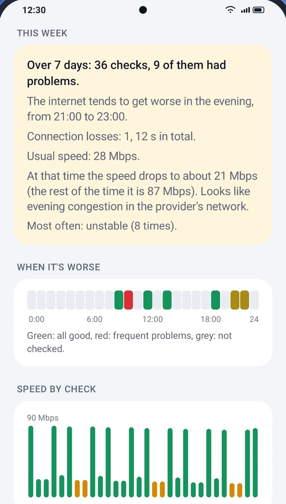

Phone, Wi‑Fi, router, DNS, provider, internet. The app goes through them one by one and shows exactly where it breaks. Pick a situation:
Phone
Wi‑Fi
Router
DNS
Provider
Internet
Checking…
It isn't fooled by one lucky result: latency is measured before and after the speed test, and access is checked against several independent servers.
Is it fast enough
Not megabits, but an answer: will it work or not
Download and upload speed, latency and stability, with a clear verdict for what matters to you.
Video calls — will they run without freezing
Online games — will there be lag
Full HD and 4K video — will it play without buffering
Compared with your usual speed — “usually 87 Mbps, now 21”

Signal map
Walk around your home and the map draws itself
No floor plan needed. The app tracks your path with steps and the compass, marks where the signal is good and where it's gone, and suggests where to put the router.
Wi‑Fi and mobile signal on one map
Dead zones at a glance
A tip on where to move the router

History
Shows when your internet gets worse
Every check is saved on your phone. The app spots patterns on its own: “the internet gets worse in the evening, 9 to 11 pm”.
Automatic check every 1, 3, 6 or 12 hours
Separately for Wi‑Fi and mobile data
A report for your provider's support in one tap, PDF included

New in 1.3
Is it okay to type passwords on this Wi‑Fi?
In a café, a hotel, an airport or at home. The app looks at how the network is protected, whether a look-alike network sits nearby, whether sites or DNS answers are faked, and whether anything leaks past your VPN.
Only what it can prove
The app reports a problem only when it can show it. No scare warnings “just in case”.
Honest about what it doesn't know
If something couldn't be checked, it says so instead of “all good”.
“Nothing found” isn't “safe”
A clean result means no signs of an attack. Nobody can honestly promise more.
12:30
Network safety
Something to note
The network has weak spotsWPA2 protection, but WPS is on
What we checked
Wi‑Fi protectionWPA2, but WPS is on
Similar networksNo look-alike networks with weaker protection nearby
DNS answersDNS answers honestly
Site authenticityThe sites proved they are genuine
Unencrypted pagesPages arrive unchanged
Every check at hand
And plenty more
Wi‑Fi radar
Walk around with your phone and watch the signal change, with “warmer, colder” sound and vibration.
Wi‑Fi channels
Are neighbouring networks in the way, and which channel is free: “Your channel is busy. Try 11”.
Connection monitoring
Runs with the screen off and logs every drop: “8:17 pm — lost connection for 12 s”.
Devices on your network
How many devices are on your home network right now. Label your own.
Before and after a restart
Did restarting the router help? A side-by-side in numbers.
Wi‑Fi or mobile, VPN or not
Which is faster right now, and whether your VPN slows you down.
Remind me in 10 minutes
If the trouble is on the provider's side, the app reminds you to check again.
Widget and tile
The last result on your home screen and a check from quick settings.
For experts
Addresses, gateway, DNS, IPv6, route and MTU. Copy it all with one tap.
37 languages
From Arabic to Japanese, right-to-left included. Light and dark theme.
This website too: no cookies, no visitor counters, no third-party fonts.
20
seconds to an answer
37
languages
0
trackers
1.7
MB app size
Questions
Is it free?
Yes. There are no ads and no paid features.
How is it better than a regular speed test?
A speed test gives you a number. Internet Doctor explains where it comes from — weak Wi‑Fi, a frozen router, broken DNS or a provider problem — and tells you what to do. It also checks stability, not just speed.
Do I need to know about networks?
No. Answers are in plain words. The numbers for experts are tucked under “Details” in case you need them.
Why does the app ask for location?
Android only shows the list of nearby Wi‑Fi networks with this permission. The app needs it to check channels and the network name. It never determines where you are, and everything else works without it.
Does it work on mobile data?
Yes. The app knows there is no router and gives advice for the mobile network: signal, carrier and balance.
Is there an iPhone version?
Not yet. Android 8 and newer only for now.
How do I contact the developer?
Write to strmax195@gmail.com. If something goes wrong, the app also has a “Send to the developer” button.
Find out what's up with your internet
Twenty seconds, and you know whom to call and what to do.